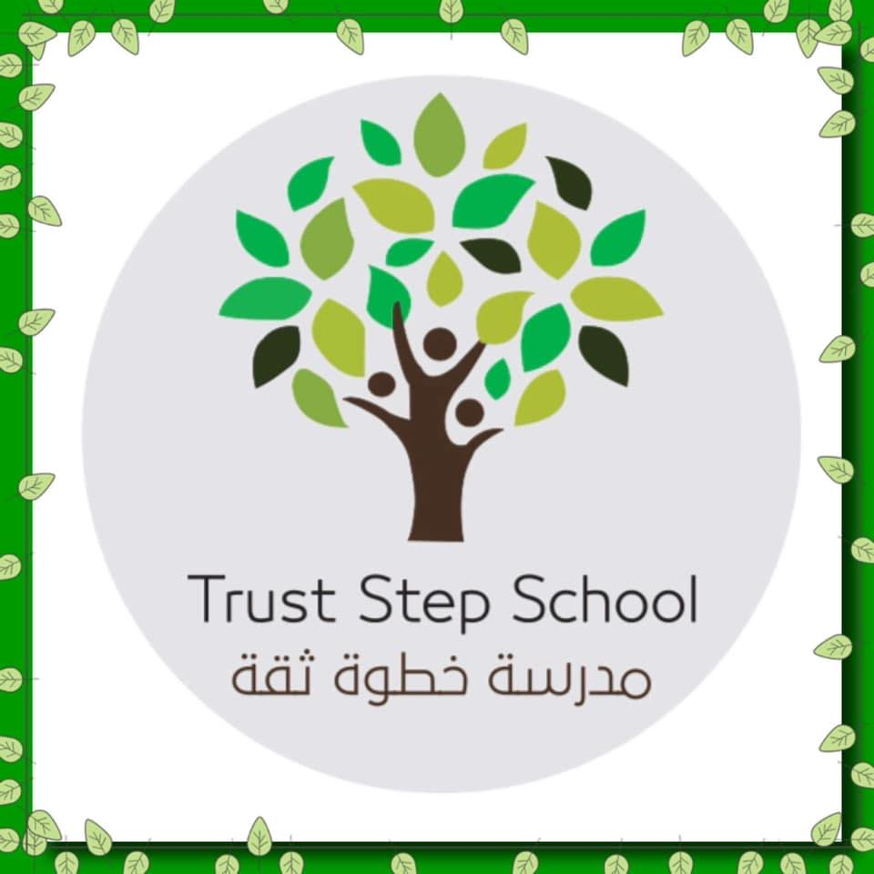

Trust step school

about the school:
Trust step school is located in Alhashan street in Tripoli, Libya.
It has
300
students.
They teach
12
subjects including
arabic, islamic and english.
They give awards at the end of each semester which include:
Best writer
Best reader
Best scientist
Best mathematician
click here to see
It also has a day called international day where all the students wear clothes from different countries and bring food from there.
The 2017 international day celebration.
Over all Trust step school is a very good school for all kids between the ages of 4-17